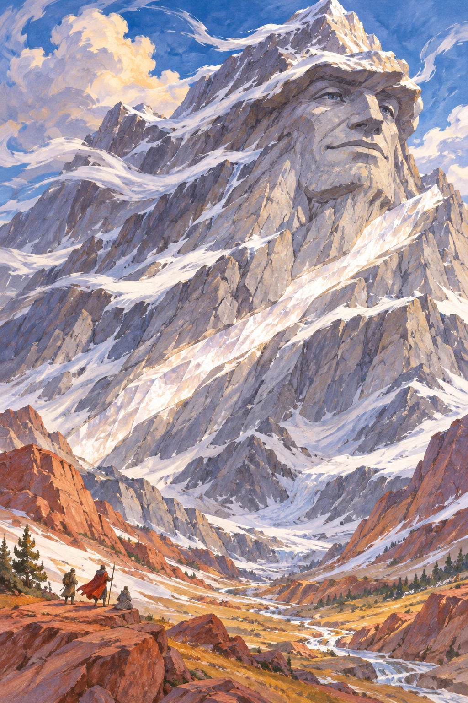

Провести первую стопу Аремы с Пяточной террасы, научиться по ходу шага читать дорожку шагов и понять, кто встал третьим в Коленном амфитеатре.
Арема

ТорвенЛоманНеми Длинная ЧертаСафф Полосатый Рукав
Если партия изменила план
Группа отказалась от задания
На гребень не ведём. Устроим встречу у подножий и спросим обе стороны, захотят ли они её. Оставляем горным общинам собственные сигналы отказа. Гости собираются внизу. Брак состоится только при согласии гор; одной готовой площадки недостаточно.
Рассвет на Пяточной террасе. Вы пришли ходоками на свадьбу двух гор и стоите на широких плоских ступенях, ещё влажных от росы. Под сапогами вздрагивает камень. Чья-то кружка сама ползёт по ступени к краю. А потом терраса начинает подниматься — медленно, целиком, вместе с вами: Арема впервые за столетие отрывает пятку. Горизонт уходит вниз, как вода из наклонённой чаши, уши закладывает, ветер свистит в них всё выше. Из стены проступает её лицо, и слова приходят позже движения губ, гулом в подошвах: «Не пугайтесь… Я только… поднимаю пятку». Через долину отвечает низким гулом Торвен, и его кварцевая полоса светлеет. Камень под ладонями тёплый и шершавый. А в Коленном амфитеатре, там, где вчера был просто холм из косых плит, что-то встаёт третьим следом: длинные руки, колени из косых плит, высокая тонкая верхушка. «Сначала посмотрите на мой шаг!» — кричит оно. Арема спрашивает: «Что там… за моей пяткой?» Между вершинами шестнадцать пролётов, а тот, кто встал третьим, пока по пояс горам.
Подготовка и роли
ШКАЛА — полностью на «Дорожка шагов» (таблица вечеров и журнал свадьбы); раздатка лежит на столе всю кампанию, двигай отметки карандашом при игроках и называй числа вслух. Р — пролёты между горами: дорожка 24→−3, старт 16; каждая клетка ниже 0 — запасная лента в финале. Л — рост Ломана 0–10, старт 3. В шаге три отметки: стопа Аремы, стопа Торвена, общая доля. Стопа — первое подходящее сверху: сорвана +1; украдена +1 и Л +1; ушиблена +2; села сама (разведана, ловушка обойдена, место не показано) 0; точно −1. Общая доля −1: обе стопы точно, знаки согласованы (вечер 2), в точке общего знака поднята лента. Остановить стопу можно всегда, без броска. Полосы Р и их действие: 18+ «Не видят друг друга» — крошка Аремы и щепка Торвена не доходят, но ходок может показать постановку рукой и голосом с нижнего уступа: стопа «села сама» (0); 12–17 «Видят, но не слышат» — общий знак поднимают двое (при 3 игроках вторая лента — НИП в точке общего знака этого вечера: Сафф, Ирдо, Век или Эша); 6–11 «Слышат через камень» — раз за шаг гора повторяет сбитый знак за другую; 0–5 «Дышат одним ветром» — в финале урон не сбивает знак с красного и серебряного камней. В финале полосы действуют только так, как сказано в правиле вечера 8. Полосы Л: 0–2 по колено; 3–4 по пояс; 5–7 по плечо (тень ложится на склон ходоков); 8+ вровень (перекрикивает горы). Финал: долей 3 при Р 5 и ниже, 4 при 6–11, 5 при 12+; Л решает, где встаёт Верхушка. Сколыш на нуле хитов — Л −1 (не больше −2 за встречу). При 4+ игроках «второй рядом» без броска держит ленту с напарником, перебрасывает его проваленный подъём (раз за шаг) или повторяет сбитый знак. ВЕЧЕР 1: учите дорожку игрой — Неми чертит мелом шестнадцать черт, стопа Торвена садится первой как образец (16→15). Ловушка на стопе Аремы.
Вечер Огняны: носок террасы, верёвка и вовремя сказанное «стой» с названной ценой.
Яр: три следа на дощечке, разница между левым и правым.
Сева: вопрос Ареме о шествии; вернуть выбор тому, чей он.
Сцена 1 · 70 минут
Пятка поднимается
Ведущий кладёт на стол дорожку шагов и при всех ставит карандашом две отметки: расстояние 16, Ломан 3. Терраса всё ещё поднимается: ступени встают наклонной стеной, и чтобы куда-то пойти, теперь надо лезть. Камень под ладонями тёплый, шершавый и гудит, как улей; ветер рвёт плащи вбок. Сверху, цепляясь локтями, съезжает Неми с дощечкой и проводит мелом по ступени шестнадцать коротких черт: «Шестнадцать пролётов до Торвена. Точная стопа — минус черта. Ушибленная — плюс две. Это не я придумала, так горы считают». Мелом в сторону амфитеатра: «А тот — по пояс горам. Вчера был холм». Оттуда гремит: «Видите, какой я высокий? Видите? Вот! Теперь видели!» Над чашей качается тонкая верхушка. Лицо Аремы в стене: «Скажите мне… что за пяткой… я сто лет туда не смотрела». Через долину гудит Торвен: «Она пошла… первой. Я так и знал». И назначает срок: «Когда тень дойдёт… до третьей ступени… я понесу ногу». Тень от края террасы уже лежит на первой ступени. Сафф машет с ребра полосатым рукавом. Неми, не поднимая головы: «Постановка — песчаная полка у Сухого зева. Справа низкий навес, ушибёт стопу. Это я вижу с плеча. Точно — проверьте ногами». Дел четыре, тени хватит на три (при 6–8 игроках на четыре). Каждое дело — лезть, спускаться, толкать, смотреть, а не спорить: спросите стол, кто куда полез, и играйте это на кренящемся камне.
Выборы
Разведать постановку у устья Сухого зева: слезть по верёвкам Неми с носка поднимающейся террасы. На склоне: верёвку раскачивает, ходок проезжает по стене и повисает над песком на вытянутой руке, пока не нащупает полку. Неми сверху: «Две ладони правее! Твою макушку вижу, полку — нет».
Очистить спину пятки: плоские плиты, которых Арема не видит, при переносе съедут в зев. На склоне: одна плита ползёт не в жёлоб, а на ходока — придержать её плечом или отпустить в зев. Арема: «Щекотно… Это… вы там? Сто лет… никто не трогал мою пятку».
Смотреть на третью фигуру в Коленном амфитеатре («Взгляд перед выпадом»). На склоне: Ломан замечает взгляд и машет: «Ты! Да, ты! Смотришь? Смотри!» — надо не отвернуться, пока его глаза снова не уйдут на пятку Аремы. Сафф с ребра: «Повторю: он смотрит на неё. Не на вас».
Спросить Арему о шествии. На склоне: чтобы она услышала, надо прижаться к стене у самого её лица, а стена кренится. Арема: «Восемь шагов… к Торвену. Сто лет… я смотрела на него через долину. Вы — мои глаза». Торвен гудит, будто смеётся: «Она… про меня?»
Проверка и путь без броска
Каждое дело — действие на склоне; бросок даёт удобство, путь без броска есть всегда. Разведка постановки: Мудрость (Внимательность) Сл 12 с наклонного края; без броска — спуститься по верёвкам Неми, это всё дело целиком. Итог: полка широкая, навес справа ушибёт. Очистка спины пятки: Сила (Атлетика) Сл 12 — плиты в безопасном жёлобе. Без броска — сталкивать плиты по одной вдвоём: дело тратят два ходока (при 3 игроках это одно из трёх дел). Провал броска — часть плит всё же уходит в зев на навес (см. последствия). Третья фигура («Взгляд перед выпадом»): без броска; ходок видит, что глаза-камешки Ломана повернулись раньше плеч — на пятку Аремы, потому что она начала первой. Это знание нужно в сцене 2. Вопрос Ареме: без броска; она говорит о восьми шагах и касании над разломом. Дорожка в сцене 1 не двигается: ведущий только показывает отметки и полосу «Видят, но не слышат» — в ней общий знак поднимают двое. Яр может срисовывать увиденное на свою дощечку («Складная дощечка Яра»). Седьмой игрок (при 7 за столом), своё дело: с Саффом на ребре следить за Ломаном через долину — «Взгляд перед выпадом» замечен без отдельного дела.
Если не получилось
Провал Внимательности не отнимает разведку: ходок всё равно спускается по верёвке, но долго, тень сходит на ступень, и одно из оставшихся дел пропадает. Провал Атлетики: плиты съезжают в зев и наполовину заваливают навес — запомнить для вечера 2. Если за Ломаном не следили, в сцене 2 ходоки видят его замах поздно: понадобится Проницательность, а крикнуть «стой» можно всегда, без броска.
Сцена 2 · 80 минут
Третий след
Тень на третьей ступени. Подъём: Арема несёт ногу, и терраса кренится так, что долина встаёт стеной сбоку, а небо оказывается под рукой. Камень отдаётся в рёбрах, ветер свистит в ушах. Торвен шагнул позже, но короче, и его стопа садится первой. Сафф на ребре поднимает руку: «Села! Повторю: точно села!» Ведущий двигает отметку при всех: «Стопа Торвена — точно: минус один, пятнадцать». Неми кивает: «Вот так это выглядит». Перенос. Стопа Аремы плывёт по воздуху, её тень ползёт через долину к зеву. В амфитеатре Ломан встаёт рывком: левая нога уходит в землю по колено, правая тянется прямо в размах Аремы, чтобы сесть в её постановку на вдох раньше. С пятки это видно, Ареме — нет. «Видели, насколько я вырос? Сейчас увидите! Увидите? Увидите!» Арема: «Скажите… куда… ставить». Лент у вас ещё нет: место показывают поднятой рукой и голосом, а «стой» кричат во всё горло. Неми, вцепившись в ступень: «Не на навес! Полка правее, две ладони!» Постановка. Стопа садится, и долина вздрагивает до самого Дома ходоков. Ведущий называет, чем стала стопа Аремы, и двигает отметки. Торвен через долину: «Видел, куда… ты встал. Теперь… отойди». Ломан, торжествуя или пятясь: «Отойду. До следующего шага». Ветер несёт песок, а у устья зева на камне остаются три следа.
Выборы
Увести стопу: попросить Арему взять шире, мимо линии, по которой тянется Ломан.
Крикнуть «стой»: Арема слышит голоса, замирает и возвращает стопу; цена названа заранее — плюс пролёт.
Показать постановку: встать у края разведанной полки, поднять руку и в последний миг отскочить.
После постановки спуститься по носку и сравнить три следа у устья зева («Третий отпечаток»); Яр рисует их на дощечке.
Проверка и путь без броска
Фазы шага. Подъём: Сила (Атлетика) Сл 10 — остаться на носке; провал — съехать на нижнюю ступень без вреда и пропустить перенос; без броска — привязаться к верёвке Неми или ехать на пятке (оттуда знак не подать). Стопа Торвена садится первой: ведёт Сафф, постановку видно с ребра — «точно», ведущий двигает 16 → 15 и говорит: «Вот так выглядит точная стопа». Перенос: если смотрели на третью фигуру («Взгляд перед выпадом»), ходоки знают линию замаха и без броска просят Арему взять шире — ловушка обойдена. Иначе Мудрость (Проницательность) Сл 13 — прочесть замах вовремя; провал — стопа ещё не украдена, крикнуть «стой» можно. Постановка: если полку не разведали — Мудрость (Внимательность) Сл 13 с носка стопы; без броска — крикнуть «стой». Стопа Аремы, первое подходящее сверху: сорвана (остановили) +1; украдена (ловушку не обошли) +1 и Ломан +1; ушиблена (не разведана, не остановлена) +2; села сама (разведана, ловушка обойдена, но место никто не показал) 0; точно (и место показали) −1. Общей доли нет: знаков ещё нет. Итог вечера вслух: лучший 14, Л 3; села сама 15; срыв 16; кража 16, Л 4 (всё ещё по пояс, но на плиту выше); ушиб 17. Всё это полоса «Видят, но не слышат» — назвать её. Следы у зева («Третий отпечаток»): после постановки, без броска.
Если не получилось
Ловушку не заметили и «стой» не крикнули: «Стопа Аремы украдена: плюс один пролёт, Ломану плюс один». Ломан орёт: «Вот! На столько! Видели? Видели!» — но следы остаются на камне. Стопа села на край навеса: «ушиблена, плюс два»; камень трескается, Арема стонет через камень: «Ох… вот… где навес», и стол понимает, зачем показывать полку. Если следы не искали: Арема приподнимает край стопы, Неми срисовывает оба следа и показывает рисунок с террасы — левый глубокий, правый мелкий, вложен в борозду. Любой исход продолжает шествие: первый вечер не проигрывается, он только сдвигает отметки.
Третий отпечаток
У устья Сухого зева, рядом с широкой красной бороздой от пятки Аремы, на песке и камне лежат два незнакомых следа: один глубокий и косой, второй мелкий, с острыми краями, влипший прямо в борозду.
Что можно установить
Правую ногу Ломан ставит только туда, где только что прошёл чужой шаг: мелкий правый след лежит внутри борозды Аремы (или внутри полосы осыпи, которую сдвинула её тень). Камень под ним не продавлен: эта нога не несла веса. Весь вес Ломан держит на левой, глубокой ноге.
Получение
После постановки пятки спуститься по носку террасы или посмотреть с её края и сравнить глубину левого и правого следов. Вывод доступен без броска; Яр может перенести оба следа на дощечку.
Запасной путь
Если никто не спускается, Арема приподнимает край стопы, а Неми быстро зарисовывает оба следа и показывает рисунок с террасы: левый глубокий, правый мелкий и вложенный в борозду.
Взгляд перед выпадом
В Коленном амфитеатре, пока поднимается пятка, глаза-камешки исполина поворачиваются раньше его плеч и задерживаются на том, кто двигается первым.
Что можно установить
Ломан вклинивается в того, кто первым начал большое движение. Ложный первый жест другой горы или скрытый старт, которого он не видит, уводят его мимо. Пока он высокий и смотрит, это работает.
Получение
Во время подъёма пятки (дело «Смотреть на третью фигуру») следить за амфитеатром и назвать, на кого повернулась его голова. Бросок не нужен.
Запасной путь
Если в вечер 1 за ним не следили, в вечер 2 Ломан сам кричит с гребня амфитеатра: «Кто первый — за тем и шагну!» — и намерение становится ясным всем.
Изменения после решений
Если Спину пятки очистили → В вечер 2 низкие следы под навесом Сухого зева целы: путь А к походке Ломана открыт полностью.
Если Спину не очистили или бросок провален → Плиты наполовину завалили навес: в вечер 2 низкие следы видны, но срисовать их можно, только раскопав вместе с Эшей (дело «Прочесть следы» занимает двоих), а у выхода следы целы.
Если Ловушку обошли (стопа Аремы «точно», «села сама» или «ушиблена» мимо Ломана) → В вечер 2 Ломан следит за Торвеном: ловушка вечера 2 на его стопе.
Если Ловушку не обошли (стопу украли или остановили) → В вечер 2 Ломан снова караулит Арему: ловушка вечера 2 на её стопе.
Выдать в нужный момент
Дорожка шагов — Вечер 1: сразу после вступительного текста, лежит на столе до конца кампании; ведущий двигает отметки карандашом при игроках.
Письмо двух вершин — Вечер 1, конец сцены 2: когда Арема опустила пятку и Огняна получила красную крошку.
Завершение вечера
Арема медленно опускает пятку. Терраса выравнивается, долина возвращается на место, ветер стихает до шёпота. В ладонь Огняны скатывается тёплая красная крошка («Красная крошка с пятки»), гудящая, как шмель в горсти. «Прижми к камню… я услышу», — говорит Арема. Яр закрывает дощечку с тремя следами. На ступень ложится письмо двух вершин («Письмо двух вершин»). Неми стирает лишние меловые черты, чтобы их осталось столько, сколько на дорожке. Из амфитеатра доносится свист — только справа.